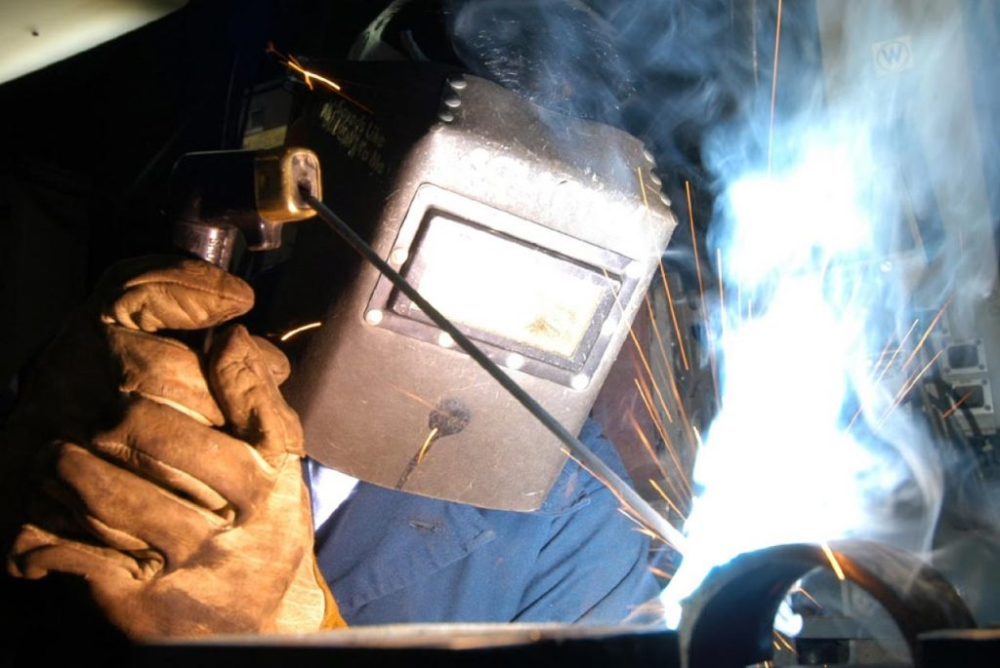
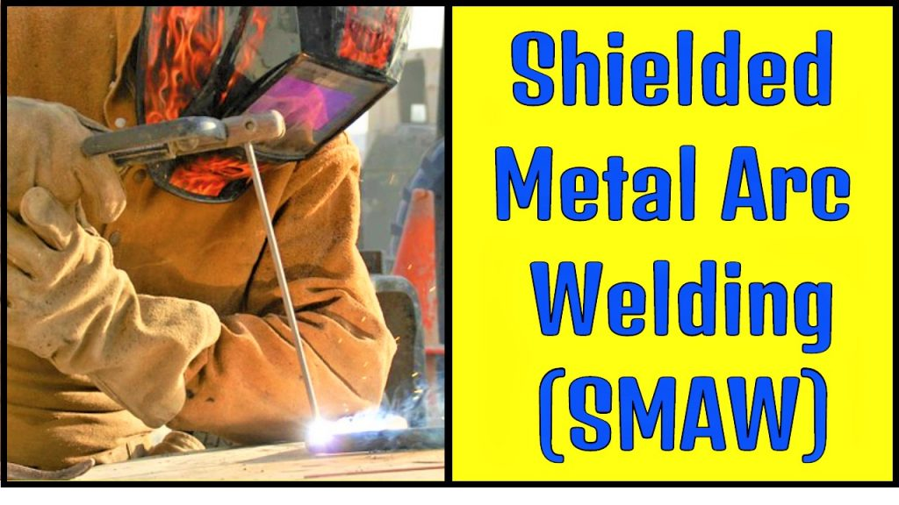
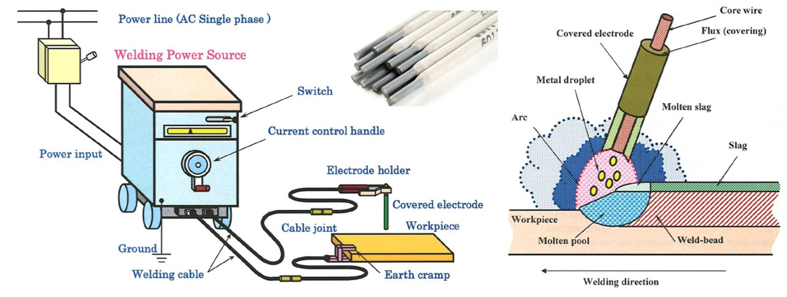

Rosales National High SchoolRosales National High School
Rosales National High SchoolRosales National High SchoolHome About Faculties Academic Tracks TVL Tracks Events Log out
|  |  |  |
|---|
The Shielded Metal Arc Welding (SMAW) Technical Diploma program provides a solid foundation in process-specific production welding technology. The program is designed to develop the necessary entry-level competencies for work in the production welding and metal fabrication industries.
* Welding NC I (SMAW) Qualification.
* TESDA Course in Welding NC I.
* welding.